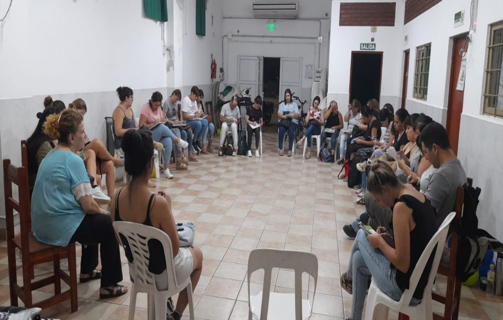

Educación y Conducción
Experiencia integral en escuelas como secretaria, vicedirectora y directora con antecedentes de oposición aprobados.
Educación, gestión y psicología social
Soy Yolanda María Verbauwede: Magíster y Licenciada en Gestión Educativa, Directora de institución educativa, Técnica Superior Operadora en Psicología Social y Secretaria General de la CGT Regional Villaguay (UDA). Trabajo junto a personas, docentes, equipos directivos y organizaciones que buscan herramientas reales de crecimiento.

Experiencia integral en escuelas como secretaria, vicedirectora y directora con antecedentes de oposición aprobados.
Psicología Social, Counseling, Educación Emocional y Neurociencia aplicadas al trabajo en vínculos e instituciones.
Representación gremial en UDA y conducción como Secretaria General de la CGT Regional Villaguay.
Espacios de mentoría, formación y asesoramiento presenciales o virtuales, destinados a personas, docentes, equipos de conducción, instituciones y empresas.
Áreas de acompañamiento

Temario disponible

Líneas de intervención

Espacios de formación sindical

Enfoque operativo

Un recorrido construido sobre la actualización permanente, el trabajo territorial en escuelas de Entre Ríos y la conducción de espacios colectivos.
“Creo en la educación como motor de transformación social y en la importancia de escuchar, acompañar y fortalecer vínculos.”
Mi trayectoria está marcada por la vocación y el compromiso. Cuento con formación en Counseling, Educación Emocional, Educación en Valores y Neurociencia: herramientas que enriquecen mi mirada sobre las personas, los grupos y las instituciones.
Desde cada espacio de responsabilidad que me tocó asumir —en el aula, en la conducción escolar, en la coordinación comunitaria y en la representación gremial— busco generar oportunidades reales de crecimiento colectivo.
Directora de institución educativa, con experiencia previa como secretaria y vicedirectora, y antecedentes de oposición aprobados.
Coordinación departamental del Programa Presentes del Consejo General de Educación durante 2021, 2022 y 2023, junto a proyectos educativos y comunitarios.
Secretaria General de la CGT Regional Villaguay y referente del gremio UDA (Unión Docentes Argentinos).
Amplia experiencia en capacitaciones sobre vínculos, procesos grupales, comunicación, educación emocional y abordajes institucionales.
Registros reales de jornadas de capacitación docente, dinámicas vivenciales en psicología social y espacios de construcción gremial.

Contacto
Propuestas adaptadas a escuelas, instituciones, empresas, sindicatos y procesos individuales de desarrollo personal, en modalidad presencial (Villaguay y Entre Ríos) o virtual.